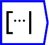
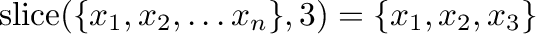
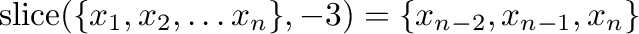

Next: Size
Up: Tensor operations
Previous: Merge
Contents

The operator can be placed on the canvas in two ways:
- From the Tensor Operations (``tensor'') toolbar
 ;
or
;
or
- By typing the letters ``slice'' on the canvas and then pressing the
Enter key.
Slice will cut off a tensor along a given axis by the argument, as
configured in the operation edit dialog. For example .
If the tensor is rank one (ie a vector), it is not necessary to specify
the axis.
If the slice argument is negative, then it refers to the number of
elements from the end of that axis. For example .